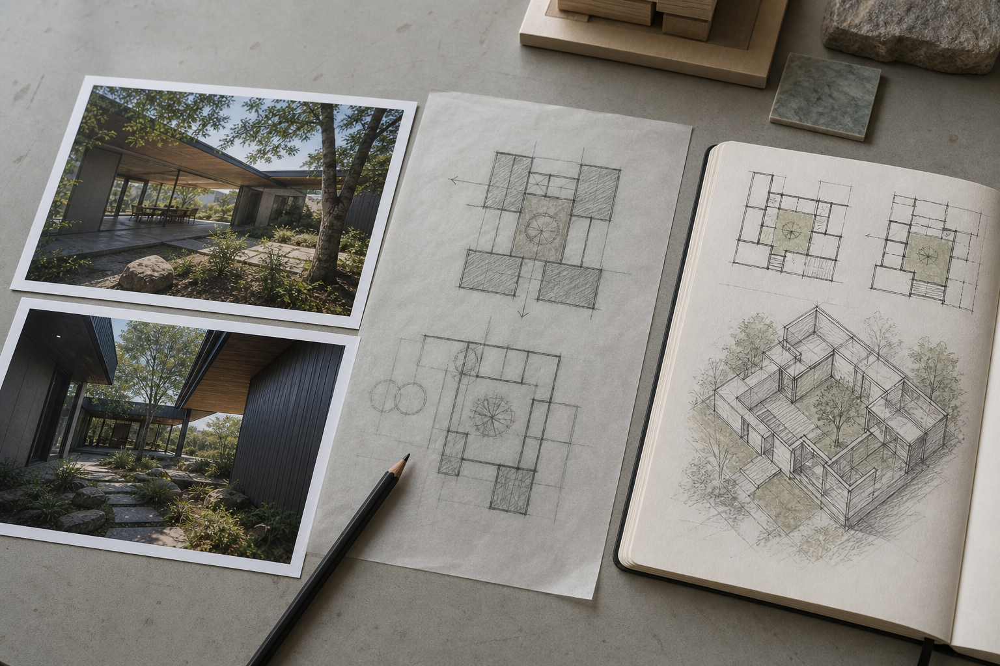
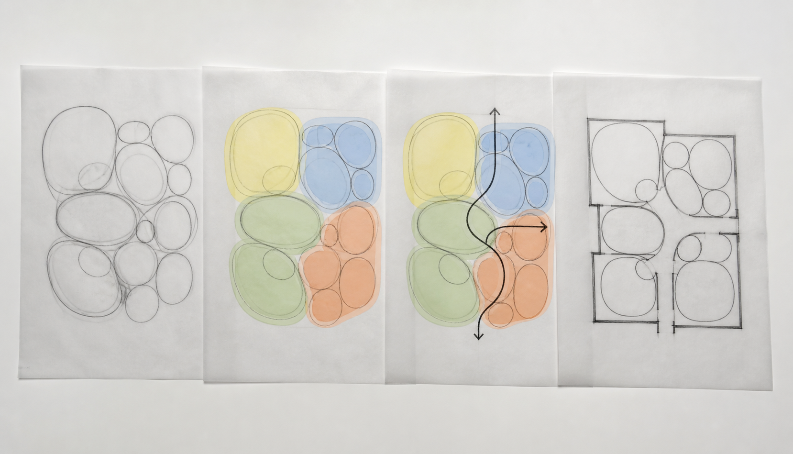
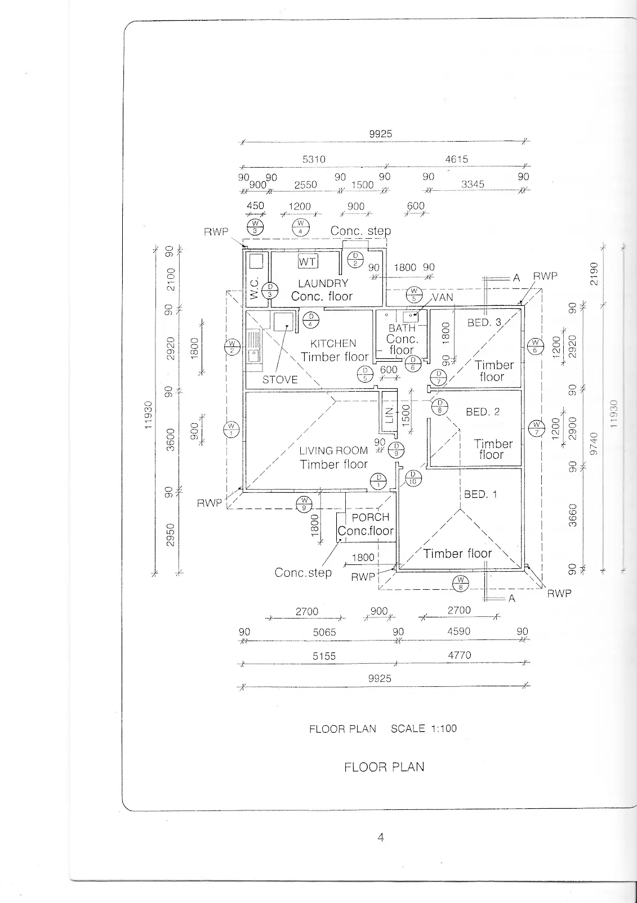
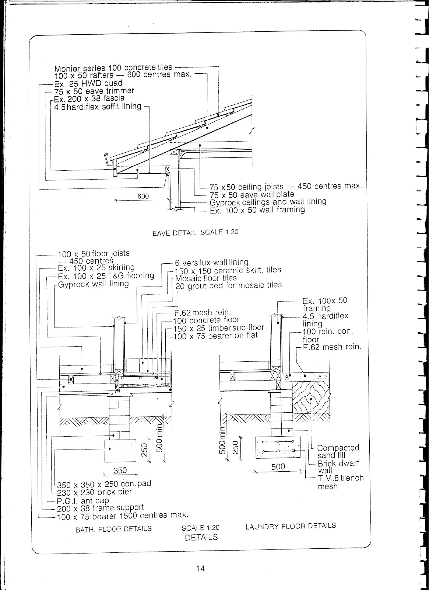
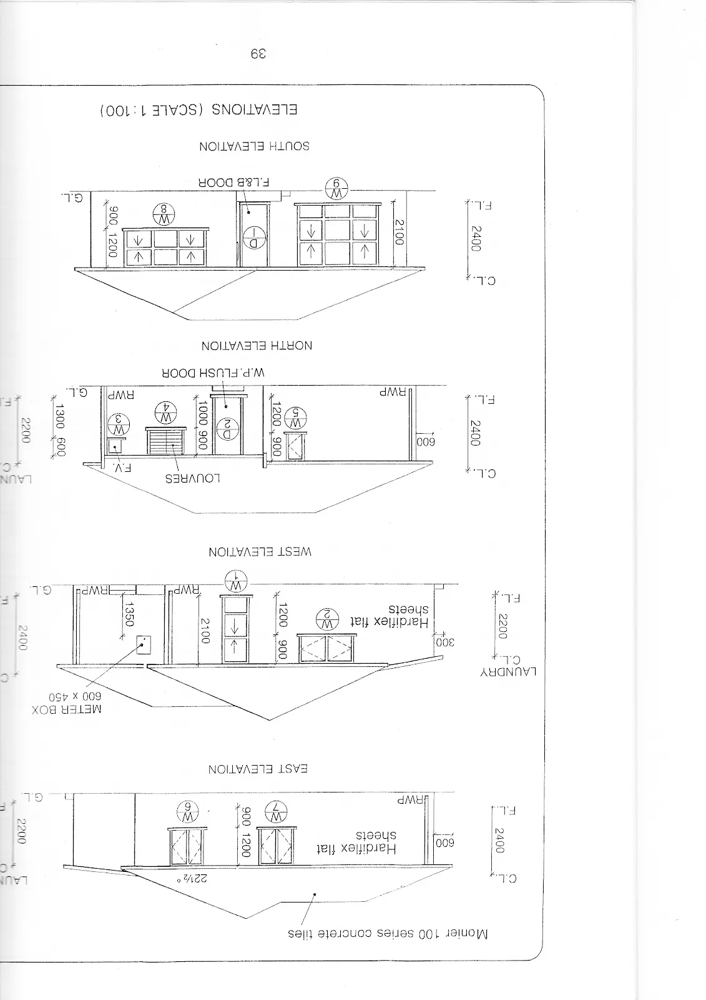
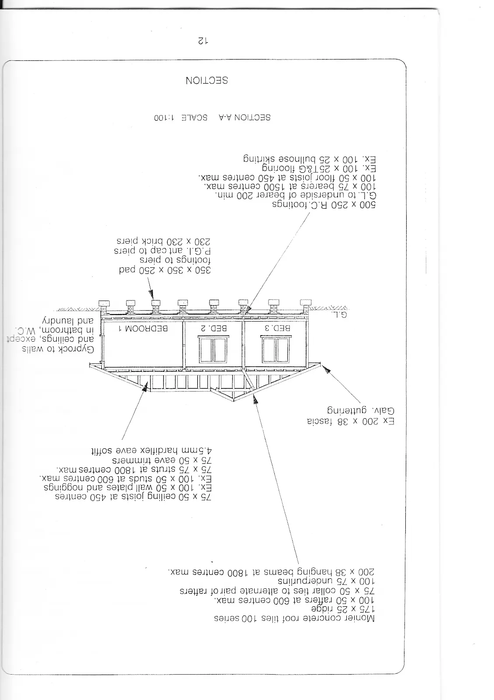
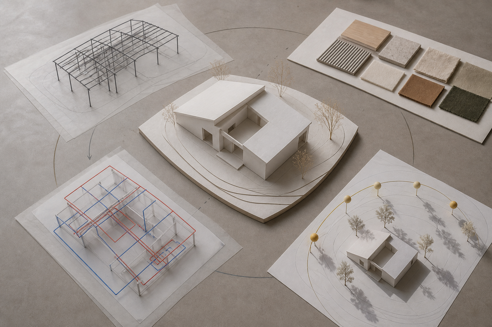
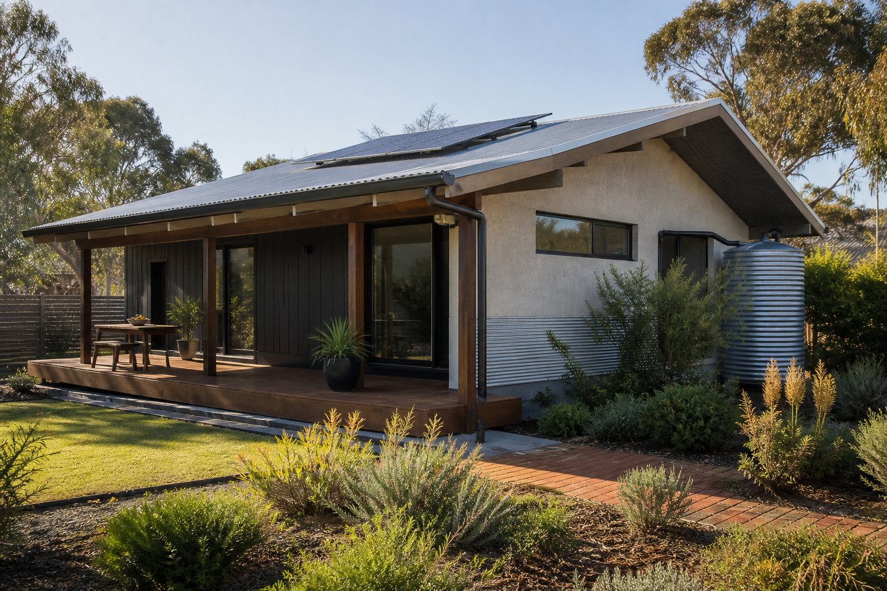
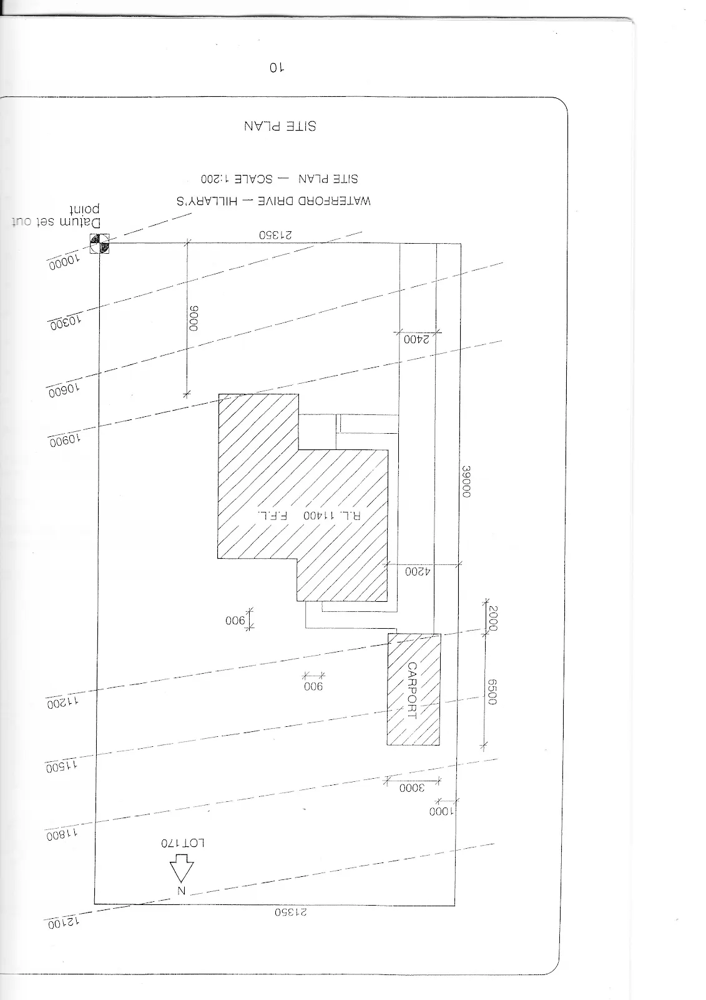

Classroom presentation
Architectural Drawing slides
Use the module deck for short, continuous whole-class explanation, retrieval and exit evidence.
Module 2 of 4 · Term 2
Move from spatial research to coordinated architectural views, then justify building-context decisions without overstating compliance.
Classroom presentation
Use the module deck for short, continuous whole-class explanation, retrieval and exit evidence.
Section M02S01
Students can apply this theory to the Homestyler compact-plan exercise by developing a bubble or adjacency study before committing to detailed walls and furniture. They can also use the research method when investigating a famous architect's background, era, design style, notable buildings and design principles, ensuring claims come from reliable cited sources and that precedent informs rather than replaces their own design decisions.
Architectural drawing begins with more than walls, doors and furniture. A floor plan is a communication tool that shows how spaces relate to one another and how people may move through them. Before drafting accurately, designers need to think about function, access, privacy, circulation, orientation and the relationship between rooms. In this module, you will use those ideas to turn a compact design brief into a clear spatial concept, then use architectural research to inform decisions without simply copying an existing building.
A floor plan is a view from above that communicates the arrangement of spaces. Furniture may help suggest how a room could be used, but a floor plan is not just furniture placement. Its more important job is to show how rooms, openings and circulation work together.
One useful way to analyse a plan is through zones. A zone groups spaces that have a related function. For example, sleeping and bathroom spaces may form a more private zone, while kitchen and living areas may form a more shared zone. Service spaces such as a laundry may need practical relationships with other rooms. The exact arrangement depends on the design brief and context rather than a fixed formula.
Adjacency means deciding which spaces should be near each other and which may need separation. A kitchen may benefit from being connected efficiently to dining or living areas. A bedroom may need more privacy from a main entry or busy shared space. These are design considerations, not universal rules. The important question is whether the relationship supports the intended use of the building.
Circulation is the way people move through and between spaces. Good circulation is not automatically the shortest possible path. A very direct route may cut through a private area, interfere with furniture, create congestion or make a room feel like a corridor. A slightly longer route may work better if it is clearer, more comfortable and better suited to the purpose of the spaces.
Other considerations include access, privacy, daylight and orientation. Access asks whether people can enter and move through the spaces logically. Privacy considers which spaces should feel more separated or protected. Daylight and orientation can influence where openings and rooms might be placed in response to a site. At this stage, treat these as design factors to investigate rather than as invented requirements. Real residential design is also accountable to current codes, sustainability processes and site conditions.
A strong planning process begins by translating the brief into relationships before drawing detailed walls. The class concept exercise uses a compact floor plan of about 60 square metres with a bedroom, toilet, kitchen, laundry and bathroom, with possible combined or optional spaces such as living and dining, storage, a porch or a garage. These are settings for the class exercise, not a universal rule for housing.
Start by identifying the required spaces and asking what each one needs to connect to. Then group related spaces into zones and sketch them as simple bubbles or boxes. At this stage, exact dimensions and wall thicknesses are less important than relationships. Move the bubbles until the arrangement makes sense, then test possible circulation paths through the concept.
A common mistake is to make every room roughly the same size because equal shapes can look orderly on the page. Functional spaces do not all need the same amount of area. A room's size should respond to what happens there, how it connects to other spaces and how efficiently the overall plan uses the available area.
For the compact exercise, one possible adjacency study might place the kitchen beside a combined living and dining zone so food preparation and shared activities are connected. The bedroom could sit away from the main entry and shared activity zone to provide greater privacy. The bathroom and laundry might be grouped nearby to create a compact service area, while the toilet could be positioned so it is accessible without requiring movement through the bedroom. This is not a finished floor plan or a required solution. It is an example of using adjacency, zoning and circulation to test relationships before detailed drafting begins.
Precedent research means studying existing architecture to understand how other designers responded to problems involving space, structure, materials, climate, users or visual character. It is not the same as copying the appearance of a building. The useful question is not ‘How can I make mine look like this?’ but ‘What design decision can I learn from, and why did it work in that context?’
When researching a famous architect, use reliable sources and check information across more than one credible reference where possible. Record the architect's historical period, education or professional background where reliable information is available, major design ideas, recognised projects and the design principles evident in their work. Keep a clear record of your sources so claims can be cited rather than repeated from an unknown website.
A useful source-checking method is to ask who produced the information, whether the source identifies evidence or references, whether the information agrees with other reliable sources and whether the page is actually discussing the architect or building you are researching. Official organisations, established cultural institutions, universities, recognised architectural bodies and reputable publishers are generally stronger starting points than unattributed summaries or image-sharing pages.
Precedent becomes valuable when it leads to a reasoned decision. For example, suppose your research identifies an architect who often organised compact homes around a clear central circulation zone. You should not copy that architect's building shape or visual style. Instead, you might test whether a clearer circulation spine improves your own compact plan, then explain the connection in your rationale. The precedent has informed your thinking without becoming a template.
Real residential projects operate within current regulatory and sustainability systems, including the National Construction Code and NSW processes such as BASIX. In this course, those sources help establish that architectural decisions exist within a broader professional context. They are not being used here to provide approval advice, minimum room dimensions or detailed compliance instructions.
The planning logic developed in this section becomes the foundation for accurate drafting. In the next section, you will move from spatial concepts into CAD drawings and learn how different architectural views and drawing conventions communicate the same design more precisely. The better your planning relationships are now, the more purposeful your later floor plans, elevations and other drawing views will be.



Applied Learning Activity · about 24 minutes
Test zones, adjacency and circulation before detailed drafting, then use precedent as evidence rather than a template.
Do: Classify each statement by the planning idea it tests. Use the supplied class spaces without inventing dimensions. Write one relationship proposal and one question that still needs evidence.
Start or resume this activityFormative practice only — not formal assessment, folio submission, teacher-observed evidence or a competency decision.
Practice, not submission. Your responses stay in this browser unless you export them.
Resume this packageHigher-order capstone · apply
Describe the planning problem, concept relationships, tested alternative, precedent influence and final rationale.
Section M02S02
Students can apply this theory when following the teacher's AutoCAD 2026 floor-plan guide. They should use the current teacher template and source set to control units, layers, dimensions, scale, title information and other drawing-specific requirements, then check that plan geometry, openings, annotation and related views remain consistent before final output.
Architectural CAD drawings communicate a design through a coordinated set of views, conventions and annotations. The software helps you construct geometry precisely, but it does not make design decisions for you and it does not guarantee that a drawing is accurate. You still need to set up the file correctly, organise information, draw carefully, check relationships between views and prepare the final output so another person can read it clearly.
No single architectural drawing shows everything. A floor plan communicates the arrangement of spaces, walls, openings and circulation from above. An elevation shows the external appearance of one side of a building, including the relationship between openings, roof form and other visible elements. A section represents an imagined cut through the building so internal relationships, heights and construction layers can be understood. A site plan places the building within its broader site context. A detail enlarges a small area so construction relationships that would be unclear at a smaller scale can be communicated more effectively.
These drawings should be read together. If a window appears in the floor plan, its location and character should make sense in the corresponding elevation or section. If a section cuts through a wall or opening, the elements shown should agree with the plan. This is called cross-view consistency. A drawing set becomes unreliable when different views describe different versions of the same building.
The teacher's source drawings include a generic house plan, elevations, a section, a site plan and construction details. Treat those as coordinated source drawings. Do not guess missing measurements or change dimensions to make the drawings easier to copy. When a specific dimension, scale, title-block requirement or drawing convention is supplied by the teacher, the current teacher template and source set control that information.
CAD work also involves two related ideas: precision in model space and readability in the final plotted or presented drawing. Geometry needs to be constructed accurately in the drawing environment, while the final communication also needs appropriate scale, line hierarchy, annotation and layout. A model can be geometrically precise but still produce a poor drawing if text is unreadable, lineweights are confusing or important information is visually lost.
A robust workflow begins with document setup. Confirm the correct drawing file, units and teacher-provided template before creating geometry. Units matter because CAD stores measurements numerically. A correctly drawn wall in the wrong unit system can produce a file that is internally consistent but completely unsuitable for the intended drawing.
Layers organise different kinds of drawing information. They are not simply colours. Layers can help separate walls, openings, annotation, dimensions and other categories so visibility, editing and graphical properties can be controlled logically. The exact layer names and settings should follow the teacher's current template rather than being invented from a generic example.
Linetype and lineweight contribute to hierarchy. Different line characteristics help readers distinguish major outlines, secondary information, hidden or reference information and annotation. Lineweight is not decoration. It helps communicate importance and structure by making some information visually stronger than other information. If every line has the same visual weight, the drawing can become harder to interpret.
Once setup and layers are established, construct the main geometry systematically. Build the walls first, then locate doors and windows according to the source information. Openings should be coordinated with surrounding wall geometry rather than added as floating symbols. As the drawing develops, use the CAD tools available to maintain alignment, clean intersections and consistent relationships instead of relying on visual estimation.
Annotation should be planned as part of the drawing, not added carelessly at the end. Dimensions communicate measured relationships, while text, a north point and title information help the reader identify and interpret the drawing. Dimensioning is more than placing numbers on finished geometry. Dimensions must correspond to the actual drawing and form a clear, readable system. If geometry changes, dimensions and related annotation need to be checked again.
CAD commands support this workflow, but commands should not become the purpose of the drawing. Knowing how to create a line, offset an object or place a dimension is useful only if those tools contribute to an accurate and readable architectural communication.
A useful way to test a drawing set is to follow one feature through different views. Imagine a fictional wall containing a single window opening. In the plan, you should be able to identify where the opening occurs along the wall. In the matching elevation, the window should appear in a position that agrees with that plan location. If a section passes through the same opening, the section should show an opening rather than uninterrupted wall material. No numerical dimensions are needed to perform this logic check.
If the plan shows the opening near one end of the wall but the elevation places it near the opposite end, one of the views is inconsistent. If the plan shows a window but the section cuts through the same location and shows a solid wall, the drawings disagree again. CAD may have produced every line cleanly, but the drawing set is still inaccurate because the views do not describe the same design.
This is why CAD does not make a drawing accurate automatically. The software can place geometry exactly where you instruct it to go, including exactly the wrong place. Accuracy comes from combining precise construction with careful interpretation of the source drawings and repeated checking.
The final output should be treated as a communication check, not just a file-generation step. A drawing that looks correct while zoomed in on screen may become difficult to read when presented at its intended scale. Check line hierarchy, annotation and overall legibility in the final form required by the teacher.
The discipline developed through CAD drafting carries into the next stage of architectural study. Accurate geometry, coordinated views and clear conventions allow you to communicate a design reliably. In the next section, you will connect that technical drawing discipline to sustainability, building context and the professional roles involved in turning design ideas into accountable real-world outcomes.



Applied Learning Activity · about 20 minutes
Trace one architectural feature through coordinated views and diagnose contradictions before output.
Do: Read each case file carefully; no dimensions are needed. Choose whether the views are consistent, inconsistent or lack enough evidence. For one inconsistent case, write the smallest useful repair process.
Start or resume this activityFormative practice only — not formal assessment, folio submission, teacher-observed evidence or a competency decision.
Practice, not submission. Your responses stay in this browser unless you export them.
Resume this packageHigher-order capstone · explain
Structure the answer as view purpose, CAD organisation, cross-view test and revision response.
Section M02S03
Students can use this theory when investigating BASIX themes of water, energy use and thermal performance, considering building context and examining professional roles. Their graphical work should show how design decisions can be communicated and coordinated across relevant architectural views, while any real regulatory or project-specific requirement should come from the current teacher brief and current official sources rather than from historical classroom material.
Architectural drawings do more than describe the shape of a building. They record decisions about spaces, site relationships, openings, materials and building systems so those decisions can be examined and coordinated. Sustainable design is part of this process rather than something added after the building has been drawn. In a real project, drawings also become a shared communication system used by people with different professional responsibilities. Your school drawings develop these ways of thinking and communicating, but they are concept and learning documents rather than approved construction documents.
Sustainability in building design involves considering how decisions affect resources, energy, water, comfort and the building's relationship with its environment. In NSW, BASIX addresses water, energy use and thermal performance. For a real project, the current requirements and official processes need to be checked rather than assumed from a classroom example.
A useful architectural drawing makes important design decisions visible enough to discuss and check. Site and orientation can influence how a building relates to sunlight, surrounding conditions and available outdoor space. The location and form of openings such as windows and doors affect more than appearance: they are part of the relationship between internal spaces and the outside environment. Shading can be considered together with openings and orientation rather than as an isolated decorative feature.
Water and energy systems can also influence planning and graphical communication. Their inclusion may affect the location of equipment, services or other building elements. Material choices introduce further considerations because different materials perform different jobs and have different implications across a building's life. There is no single sustainable feature that automatically makes a whole design sustainable.
This is why the idea that sustainability means adding solar panels at the end is too narrow. A designer should consider sustainability while developing the building concept and continue reviewing it as the design changes. Site relationships, spatial planning, openings, shade, systems and material choices can interact. Improving one aspect may create a new issue somewhere else, so decisions need to be considered as part of a system.
Drawings help make this reasoning checkable. A site plan can communicate the relationship between the building and its site. A floor plan can show the position of spaces and openings. Elevations can show the external arrangement of openings and shading elements. A section can reveal vertical relationships that may not be clear in plan. Roof information and details can communicate other aspects of the design. Together, these drawings provide evidence that can be compared rather than relying only on a written claim that a design is sustainable.
Building projects involve collaboration. No single professional automatically owns every drawing decision. Different people bring different knowledge to the same design, and their decisions need to be coordinated through drawings, specifications, discussion and revision.
The important point is not to memorise a rigid list of who draws each line. It is to understand that the same building information may affect several roles. An architectural decision can create an engineering question. An interior decision can affect the location of an opening. A change to a building system can affect space planning. Good graphical communication allows these relationships to be discussed before conflicting information causes larger problems.
A polished perspective or rendering can help an audience imagine a design, but it does not prove that the building can be constructed. A rendering may hide information about structure, dimensions, materials, services or relationships that become visible in plans, elevations, sections and details. Visual appeal and technical resolution are different qualities, and both require appropriate evidence.
Architectural documentation develops through revision. Designers test ideas, receive information, identify conflicts and update their work. Revision is not evidence that the first drawing failed. It is part of making a design more resolved and keeping information consistent.
Suppose a window is moved after the designer reviews the room's relationship with daylight, orientation and external shade. Changing the window symbol on the floor plan is only the beginning. Its position may also need to change on the relevant elevation. If a section passes through or near the window, that drawing may need review as well. Any related notes, details or other graphics should be checked for consistency. The sustainability reasoning should also be reconsidered because the relationship between the opening, room, orientation and shade has changed.
This example does not claim that one window position is more sustainable or compliant than another. It demonstrates a coordination principle: one design decision can affect several drawings and several kinds of reasoning. Changing one view and ignoring the rest creates contradictory documentation.
Coordination also requires careful document control. If one drawing represents an older version while another represents the latest revision, readers may make decisions from conflicting information. In classroom work, this means checking your whole drawing set whenever a significant design change is made rather than correcting only the page you happen to be working on.
Real residential design operates within current requirements, including the National Construction Code and relevant NSW sustainability processes such as BASIX. The NCC is Australia's primary set of technical design and construction provisions, but editions and jurisdictional requirements can change and must be checked for real projects. Your classroom work is not a substitute for those processes. For any real requirement, use the current teacher brief and the relevant official sources rather than treating a school concept drawing as an approved or build-ready document.
The habits developed in architectural drawing transfer directly into engineering graphics: understand what each view communicates, maintain relationships between views, revise information consistently and make technical ideas readable to other people. In the next module, you will apply this discipline through projection and freehand communication, where three-dimensional objects must be understood and represented clearly using coordinated engineering drawing views.



Applied Learning Activity · about 22 minutes
Follow one design change through sustainability reasoning, relevant views and professional questions without making unsupported compliance claims.
Do: Select every representation or decision that needs review. Classify each claim by what the drawing evidence can actually support. Write a concise revision note that another reader could follow.
Start or resume this activityFormative practice only — not formal assessment, folio submission, teacher-observed evidence or a competency decision.
Practice, not submission. Your responses stay in this browser unless you export them.
Resume this packageHigher-order capstone · evaluate
Use the sequence: change, evidence questions, role contributions, drawing-set impacts and final judgement.
End-of-module review
Completion means the questions were checked and the capstone has text saved. It does not mean submission or a formal mark.